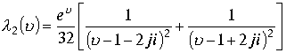
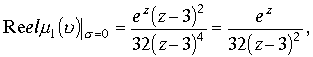
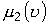
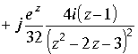

|
В. И. ЕЛИСЕЕВ ВВЕДЕНИЕ В МЕТОДЫ ТЕОРИИ
ФУНКЦИЙ ПРОСТРАНСТВЕННОГО КОМПЛЕКСНОГО ПЕРЕМЕННОГО |
|
1.7.3. Вычисление определенных двойных интегралов с помощью вычетов.
Теоремы о вычетах позволяют сводить вычисление интегралов от комплексных пространственных функций по замкнутой поверхности к нахождению вычетов подынтегральных функций внутри этой замкнутой поверхности . Тем же способом можно вычислить двойные интегралы от действительных переменных . Для этого достаточно подобрать пространственную функцию , проекция которой на плоскость Z , соответствовала бы вычисляемому интегралу. Наличие изолированного направления в пространстве вносит свои особенности в отыскание исходной пространственной функции.
Если функция имеет изолированные точки в
Z плоскости и изолированные точки в верхнем или нижнем полупространстве то возможны варианты. Изолированные точки в Z плоскости можно исключить из рассмотрения , заключив их в полусферы. В этом случае критическими точками становятся пространственные точки , определенные на основе существования делителей нуля и могут рассматриваться независимо друг от друга.Двойной интеграл в пространстве
Элементарная площадка
.
Составим интеграл
.
Учитывая преобразования ,которые проводились в предыдущем разделе, по преобразованию элементарных проекционных площадок , определим проекцию этого интеграла на комплексную плоскость Z .
, где .
Интеграл имеет первые действительную и мнимую части ,как результат наличия в пространстве изолированного направления. Докажем одну из лемм. Предположим, дан двойной интеграл в плоскости Z.
, который сходится и подынтегральная функция имеет конечное число особых точек в комплексной плоскости Z .Теорему о вычетах применить к двойному интегралу нельзя, поэтому сведем вычисления в пространство вычетов. Плоскость Z замкнем поверхностью и рассмотрим интеграл , где.Пусть функция регулярна в комплексном верхнем пространстве , . Последнее не означает, что берется только , так как в пространстве существует изолированное направление  , необходимо взять изолированное направление в верхнем пространстве
, необходимо взять изолированное направление в верхнем пространстве
. Эта особенность диктует появление в проекции интеграла на плоскость Z первой мнимой части. Предположим , что функция имеет конечное число особых точек в верхней половине пространства.
По условию, если сходится , то сходится , где поверхность верней полусферы , включая и изолированное направление. Тогда по теореме Коши для многосвязных областей запишем равенство
, где первая сумма есть сумма вычетов особых точек, лежащих в плоскости Z, вторая сумма есть сумма вычетов функции по точкам изолированного направления , находящихся в верхнем полупространстве. Вторая сумма равна нулю, ибо имеем два эквивалентных разложения и второе эквивалентное разложение недопустимо , так как рассматривается только верхнее полупространство( нет сопряженного делителя для отыскания критических точек). Первая сумма в этом случае умножается на 2.
Доказательств. Область , охватываемая поверхностью  , при бесконечном увеличении R, содержит все особые точки функции . По теореме Коши о вычетах имеем
, при бесконечном увеличении R, содержит все особые точки функции . По теореме Коши о вычетах имеем
.
Двойка перед суммами исчезает, так как она учитывается при разложении подынтегральной функции на два направления. В силу условия
и сходимости интегралов получимПример1. Вычислить интеграл по плоскости Z от пространственной функции
,Рассмотрим подынтегральную функцию. В пространстве
. Первую дробь разложим на простейшие дроби по точкам , вторую дробь по точкам Последовательно проведем преобразования
. В этом разложении нас интересуют только дроби первые две , в которых нерегулярные точки являются полюсами второго порядка. Поэтому,
Аналогично вторая дробь примет вид
.Таким образом , подынтегральная функция.
В этом интегральном равенстве имеем одну критическую точку
вне зависимости от способа ее определения. Критические точки исключены из области рассмотрения полусферами. Это как раз тот случай когда критические точки, определенные из условия существования в пространстве делителей нуля становятся обычными критическим точками независимыми друг от друга и могут быть разделены областью определения.Рассмотрим по порядку каждый из интегралов. Подынтегральная функция первого интеграла в соответствии с леммой представляет сумму проекций действительной и мнимой первой части от функций
,где к=1,2,3, так как рассматривается верхнее полупространство. Произведем выделение действительных и мнимых частей этих функций.

.
Для функции
 получим:Рассмотрим функцию
.. Откуда имеем также действительную и мнимую части.
. В результате подынтегральная функция  в проекции на плоскость Z в соответствии с формулой , выведенной в (1.8.1), равна
в проекции на плоскость Z в соответствии с формулой , выведенной в (1.8.1), равна

Мини оглавление:
[0], [1.1.1, 1.1.2, 1.1.3, 1.1.4, 1.1.5, 1.1.6, 1.1.7, 1.1.8, 1.2, 1.2.1, 1.2.2, 1.2.2.a, 1.2.2.b, 1.2.2.c, 1.2.2.d, 1.2.2.e, 1.2.2.f, 1.2.2.g, 1.2.2.h, 1.2.3, 1.3.1, 1.3.2, 1.3.3, 1.3.4, 1.3.5, 1.3.6, 1.4.1, 1.4.2, 1.5, 1.6, 1.7.1, 1.7.2, 1.7.3.1, 1.7.3.2, 1.7.3.3, 1.7.4.1, 1.7.4.2, 1.8.1], [2.1, 2.2],[3.1, 3.2, 3.3, 3.4.1, 3.4.2, 3.4.3, 3.4.4, 3.4.5],[4.1, 4.2, 4.3, 4.4],[5.1, 5.1.Рис.52, 5.2, 5.3, 5.4, 5.4.Т1, 5.4.Т2, 5.4.Т3, 5.5.1, 5.5.2, 5.5.3, 5.5.4],[6.1.1, 6.1.2, 6.2.1, 6.2.2, 6.2.3, 6.2.4, 6.2.5, 6.3, 6.4.1, 6.4.2, 6.5.1, 6.5.2],[7.1, 7.2, 7.3, 7.4, 7.5, 7.6, 7.7.1, 7.7.2, 7.8.1, 7.8.2, 7.8.3, 7.9],[8.1, 8.2.1, 8.2.2, 8.3, 8.4, 8.5, 8.6, 8.6.T1, 8.7, 8.8.1, 8.8.2, 8.8.3, 8.9.1, 8.9.2, 8.9.3, 8.10, 8.10.T2, 8.10.T3],[9.1, 9.2, 9.3, Рис.88, 89, 90, 91, 92, 93, 94, 95, 96, 97, 98, 99, 100],[10.1, 10.2, 10.3, 10.4, 10.5, 10.6, 10.7, 10.8, 10.9, 10.10, 10.11, 10.12, 10.13, 10.14, 10.15.1, 10.15.2, 10.16.1, 10.16.2, 10.17, 10.18],[11]
Размещенный материал является электронной версией книги: © В.И.Елисеев, "Введение в методы теории функций пространственного комплексного переменного", изданной Центром научно-технического творчества молодежи Алгоритм. - М.:, НИАТ. - 1990. Шифр Д7-90/83308. в каталоге Государственной публичной научно-технической библиотеки. Сайт действует с 10 августа 1998.
E-mail: mathsru@gmail.com